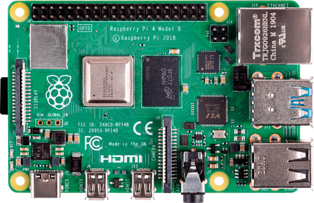
Description
The Raspberry Pi 4 Model B is a powerful single-board computer that acts as the brain of the
RoboCar. It processes sensor input, executes control algorithms, and manages communication with
peripherals.
Key Features
- Quad-core ARM Cortex-A72 processor
- 1 GB to 8 GB RAM (varies by model)
- USB 3.0 and USB 2.0 ports
- Dual micro-HDMI ports for 4K display
- GPIO header for hardware interfacing
- Wi-Fi and Bluetooth connectivity
Applications
- Main control unit of the RoboCar
- Real-time sensor data processing
- Motor and actuator control
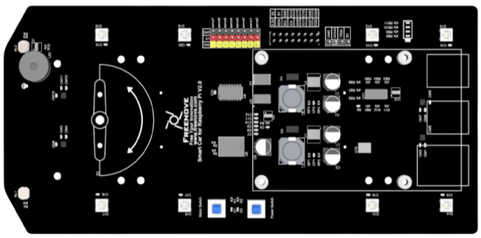
Description
The Freenove 4WD baseplate provides a sturdy chassis for the RoboCar, including motor mounts,
battery holder, and multiple mounting holes for sensors and controllers.
Key Features
- Durable acrylic or metal base construction
- Houses 4 DC geared motors
- Supports various sensor and module placements
- Pre-drilled holes for Raspberry Pi and other boards
- Comes with wheels, screws, and spacers
Applications
- Robotics and motion experiments
- Sensor integration and testing
- Educational platforms for programming and electronics
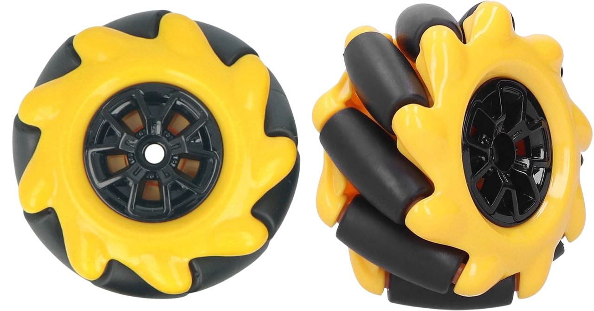
Dimensions
Typical size: 60 mm – 100 mm diameter, 30 mm – 50 mm width (varies by model)
Key Features
- Omnidirectional movement capability
- 45° angled rollers enable lateral, diagonal, and rotational movement
- Typically used in 4-wheel configuration (X or O pattern)
- Requires individual motor control for each wheel
Working Principle
Mecanum wheels use angled rollers around the circumference to generate movement in multiple
directions. By adjusting the speed and direction of each wheel, the vehicle can move forward,
backward, sideways, diagonally, and rotate on the spot.
Motion is achieved through vector addition of the individual wheel forces.
Mounting
- Each wheel is mounted to a separate motor shaft
- Proper roller orientation is critical (front-left and rear-right: rollers form “/”)
- Often paired with encoders for precision control
Applications
- Mobile robots requiring high maneuverability
- Automated Guided Vehicles (AGVs)
- Warehouse and logistics platforms
- Research and education projects
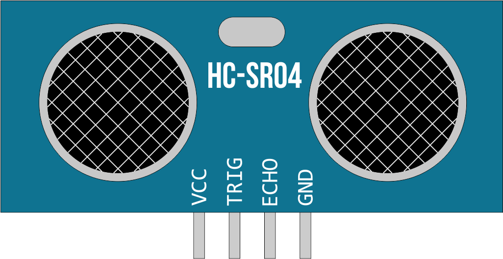
Dimensions
Approx. 45 mm × 20 mm × 15 mm
Technical Specifications
- Operating Voltage: 5 V DC
- Current Consumption: approx. 15 mA
- Measuring Range: 2 cm – 400 cm
- Accuracy: ±3 mm
- Signal Level: 5 V TTL
Working Principle
The sensor sends a 40 kHz ultrasonic pulse via the trigger pin. The reflected signal is received
on
the echo pin. The distance is calculated using the travel time:
Distance = (Time × Speed of Sound) / 2
Speed of sound in air ≈ 343 m/s
Pinout
- VCC – Power Supply (5 V)
- Trig – Trigger Signal (Input)
- Echo – Echo Signal (Output)
- GND – Ground
Applications
- Obstacle detection in robotics
- Level measurement (e.g., tanks)
- Parking assistance systems
Dimensions
Approx. 45 mm × 20 mm × 15 mm
Technical Specifications
- Operating Voltage: 5 V DC
- Current Consumption: approx. 15 mA
- Measuring Range: 2 cm – 400 cm
- Accuracy: ±3 mm
- Signal Level: 5 V TTL
Working Principle
The sensor sends a 40 kHz ultrasonic pulse via the trigger pin. The reflected signal is received
on
the echo pin. The distance is calculated using the travel time:
Distance = (Time × Speed of Sound) / 2
Speed of sound in air ≈ 343 m/s
Pinout
- VCC – Power Supply (5 V)
- Trig – Trigger Signal (Input)
- Echo – Echo Signal (Output)
- GND – Ground
Applications
- Obstacle detection in robotics
- Level measurement (e.g., tanks)
- Parking assistance systems
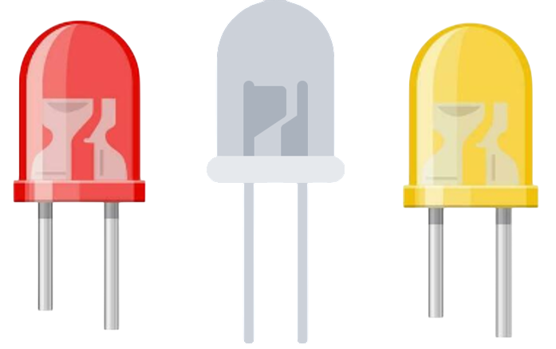
Description
These are standard small LEDs (Light Emitting Diodes) commonly used in electronics and model
building. They emit light when an electric current passes through them.
Typical Specifications
- Forward Voltage: 1.8 V – 3.3 V (depends on color)
- Forward Current: 10 mA – 20 mA
- Colors: Red, Green, Blue, Yellow, White, etc.
- Viewing Angle: Typically 20° – 60°
Working Principle
LEDs are diodes that emit light when forward-biased. They only allow current to flow in one
direction. A suitable resistor is required in series to limit current and prevent damage.
Pinout
- Anode (longer leg) – Positive (+)
- Cathode (shorter leg / flat edge) – Negative (−)
Applications
- Status indicators
- Lighting effects in models
- Visual feedback for electronic circuits
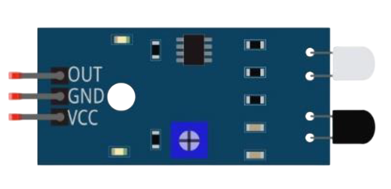
Dimensions
Approx. 48 mm × 14 mm × 8 mm
Technical Specifications
- Operating Voltage: 3.3 V – 5 V DC
- Current Consumption: ≤ 20 mA
- Detection Range: 2 cm – 30 cm (adjustable via potentiometer)
- Output Type: Digital (HIGH/LOW)
- Infrared Wavelength: ~940 nm
Working Principle
The sensor continuously emits infrared light. When an object is in front of the sensor, the IR
light is reflected and detected by the receiver. Based on the intensity of the reflection, the
digital output changes state.
The detection range can be adjusted using the onboard potentiometer.
Pinout
- VCC – Power Supply (3.3 V – 5 V)
- GND – Ground
- OUT – Digital Output (HIGH = no obstacle, LOW = obstacle detected)
Applications
- Obstacle avoidance in robotics
- Automatic door systems
- Object detection in toys
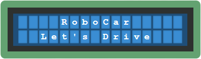
Description
The LCD display shows key information such as speed, direction, and sensor readings.
Applications
- Status monitoring
- User interface for robots
- Debugging and diagnostics
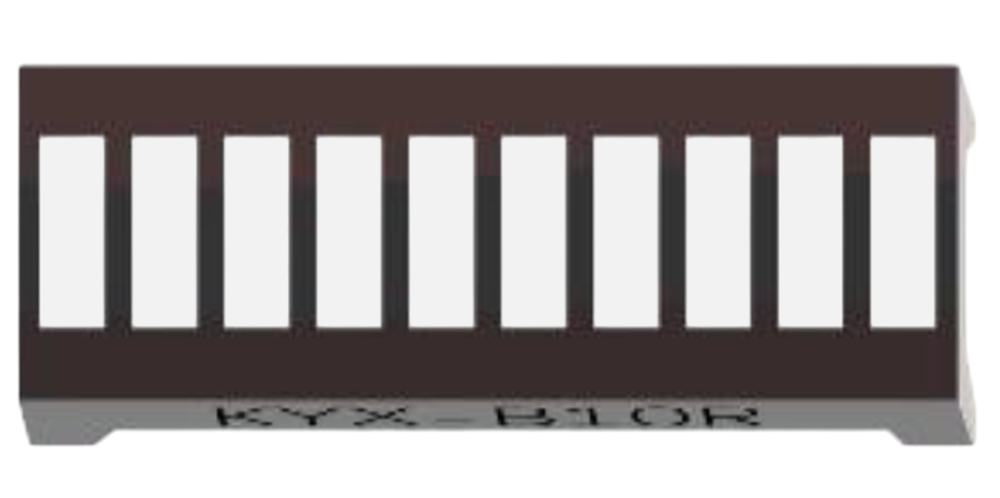
Description
The LED bar displays battery charge levels and can also be used for visual signaling.
Applications
- Battery level indication
- Visual status signals
- Interactive feedback in robotics
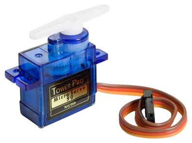
Description
The servo motor is used to control robotic arms or other movable components.
Working Principle
Servo motors use feedback to precisely control angular position. They typically accept PWM
signals to determine target angle.
Applications
- Robotic arms
- Steering mechanisms
- Camera pan/tilt systems
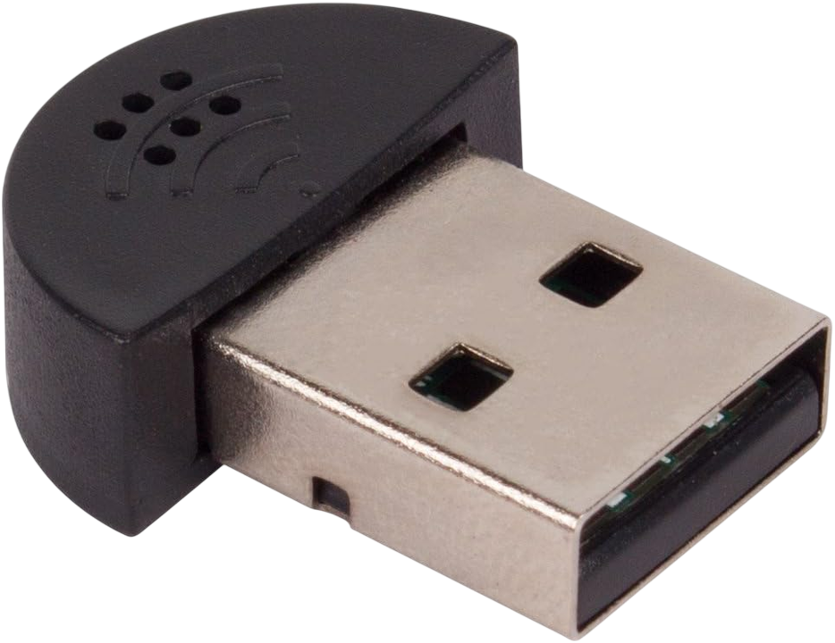
Description
The microphone allows voice recognition and interaction with the robot via sound input.
Applications
- Voice control
- Sound-based interaction
- Environmental audio monitoring
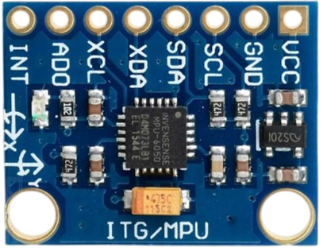
Description
The MPU6050 is a 6-axis motion tracking sensor that provides acceleration and gyroscope data.
Working Principle
Combines a 3-axis accelerometer and a 3-axis gyroscope to detect motion, tilt, and rotation.
Communicates via I²C.
Applications
- Self-balancing robots
- Motion detection
- Orientation tracking
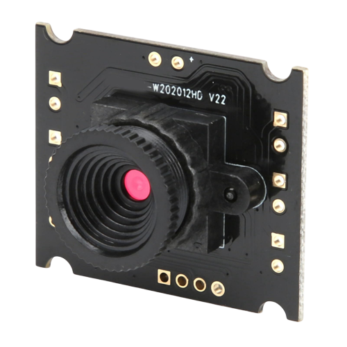
Description
The camera enables visual monitoring of the environment and supports computer vision
applications.
Applications
- Object detection
- Line following
- Remote surveillance
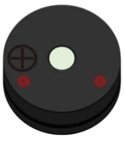
Description
An active buzzer is an electronic sounder that produces a tone when powered. It contains a
built-in oscillator circuit, so it only needs a DC voltage to operate.
Typical Specifications
- Operating Voltage: 3 V – 5 V DC
- Current Consumption: ~20 mA – 35 mA
- Sound Output: ~85 dB at 10 cm
- Frequency: Typically fixed around 2–4 kHz
Working Principle
The active buzzer has an internal oscillating circuit that drives the piezo element. Simply
applying a DC voltage causes it to produce a continuous tone. Unlike passive buzzers, it does
not require an external signal or PWM.
Pinout
- Positive (+) – Often marked or longer pin
- Negative (−) – Often shorter pin or unmarked
Applications
- Alarms and notifications
- Timers and reminders
- Simple audio feedback in embedded systems
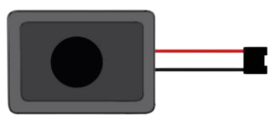
Description
These compact rectangular speakers are ideal for small audio projects. They are passive speakers
and require an amplifier to produce sound from a signal source.
Typical Specifications
- Power Rating: Max. 3 W
- Impedance: 8 Ω
- Dimensions: Approx. 40 mm × 20 mm
- Type: Passive (no built-in amplifier)
Working Principle
As passive components, these speakers convert analog electrical signals into sound waves using a
magnetic coil and diaphragm. They require a properly amplified audio signal.
Connections
- Two terminals (solder pads or wires)
- Polarity is generally not critical for single-speaker use
Applications
- Embedded audio output
- Voice or sound playback in robots or toys
- Signal tones or music in microcontroller projects